Configuration
MockTab asks for two macOS permissions on first launch. Some drawing apps also need settings changes to use every tablet feature. This page covers both.
System permissions
macOS requires your permission before an app can read the keyboard, mouse, pen, or screen. When prompted, grant access and relaunch MockTab. If a toggle will not stay on, remove MockTab from the list and add it again. Moving or reinstalling MockTab can invalidate an earlier permission.
Accessibility
Accessibility lets MockTab provide pen events for other apps.
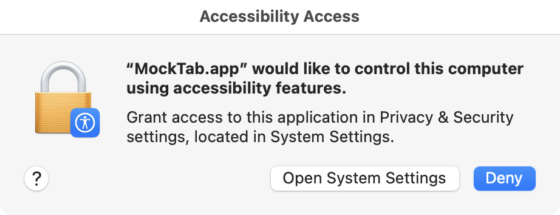
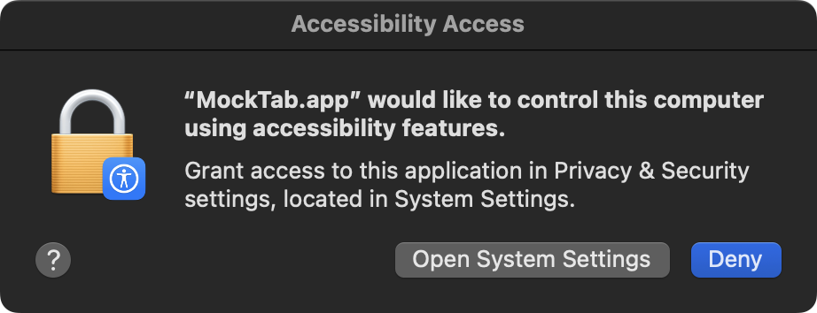
Clicking Open System Settings launches the Accessibility pane. Usually requires admin approval.
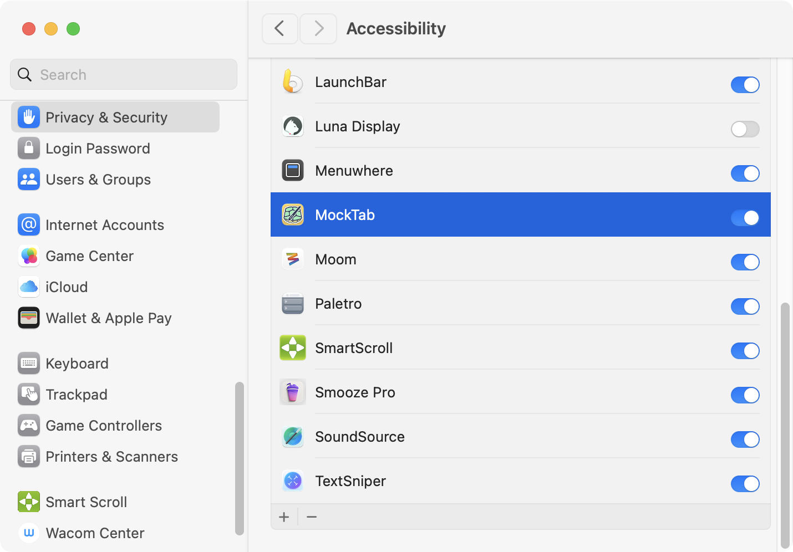
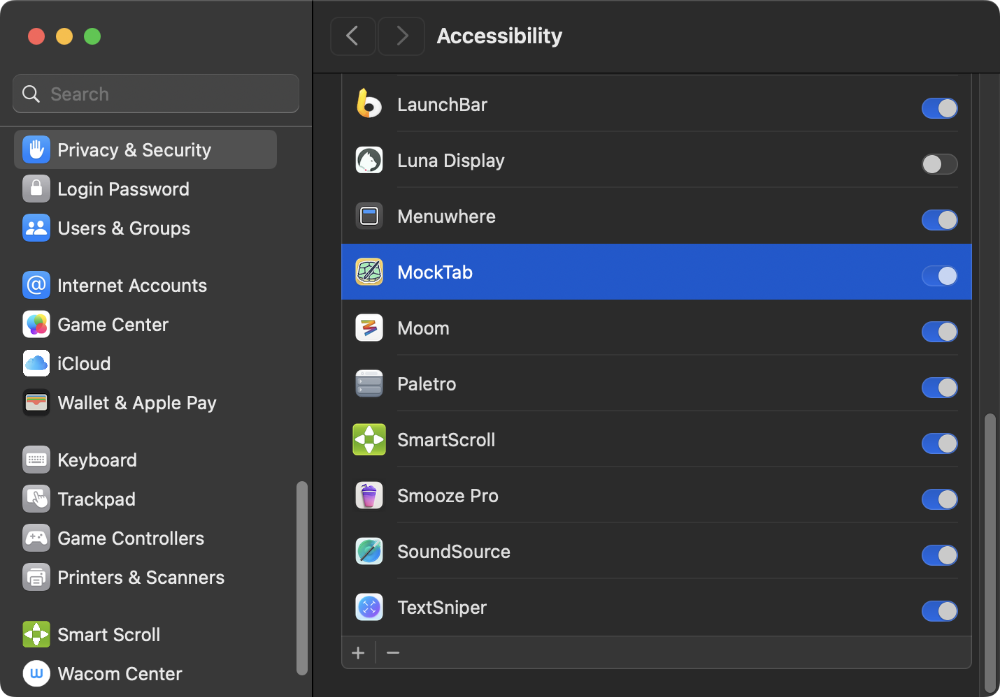
Input Monitoring
Input Monitoring lets MockTab read raw tablet input.
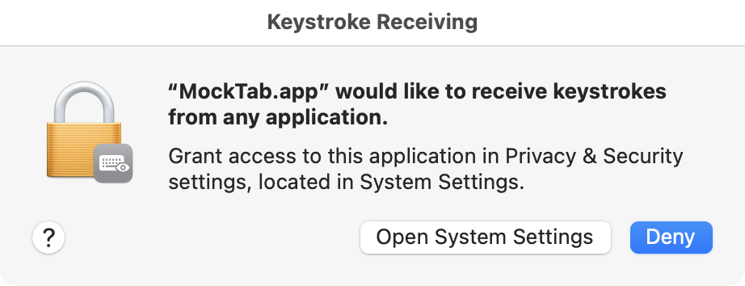
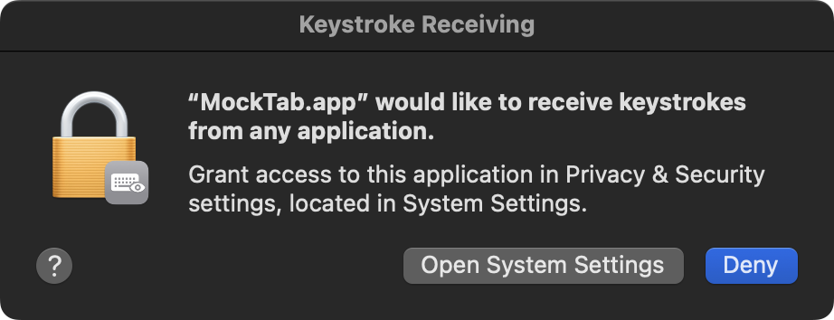
Toggle MockTab on in the Input Monitoring pane, then relaunch MockTab when macOS asks.
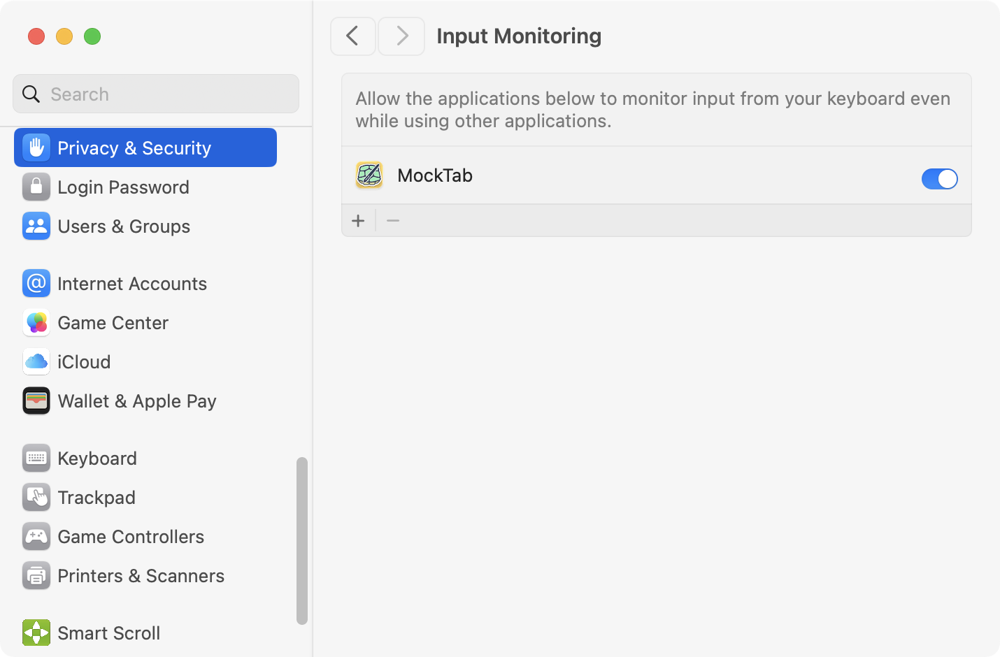
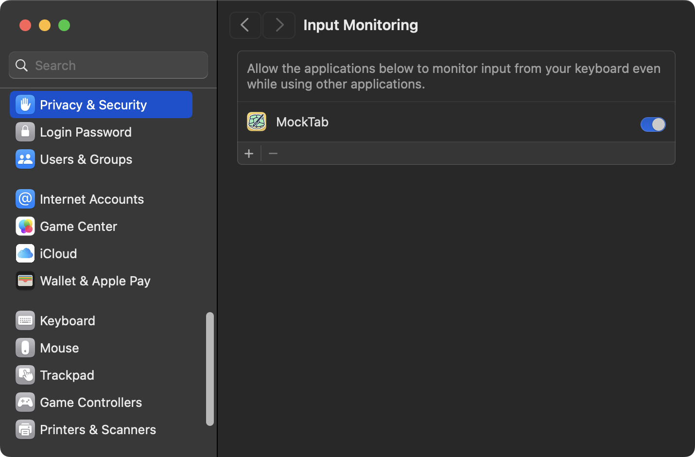
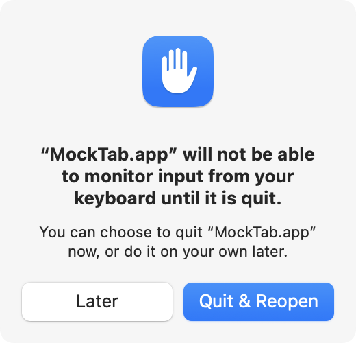
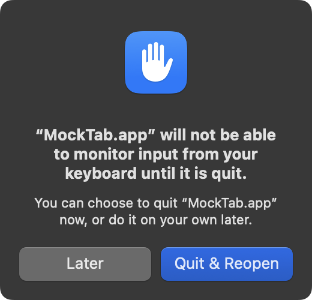
Bluetooth pairing
Intuos Pro Gen 2 tablets (PTH-460, PTH-660, PTH-860) support Bluetooth Classic. To pair:
- Disconnect the USB cable.
- Power the tablet on without holding the touch ring's center button. The small LED near the USB port blinks while the tablet waits for a connection.
- Open System Settings → Bluetooth and connect to the tablet.
macOS may also list an entry with an "LE" prefix (for example, "LE IntuosPro L"). That is the tablet's low-energy profile, which macOS claims as a trackpad; the pen sends nothing over it. Pair the entry without the "LE" prefix.
MockTab detects the Bluetooth connection automatically and treats it as the same tablet as the USB entry.
Application notes
Most Mac drawing apps receive pressure and tilt without configuration. Stylus rotation is the outlier: only a handful of pen models (chiefly Wacom's Art Pen) report a true barrel rotation axis, and apps handle it inconsistently. The screenshots below show where each app exposes its rotation control. Background on how apps learn that a pen reports rotation lives in the macOS tablet event notes.
Affinity
Canva Affinity detects rotation automatically for brushes that have a rotation-driven dynamic enabled. The brush editor's dynamics panel provides options to set rotation using nib angle, size, or other parameters.
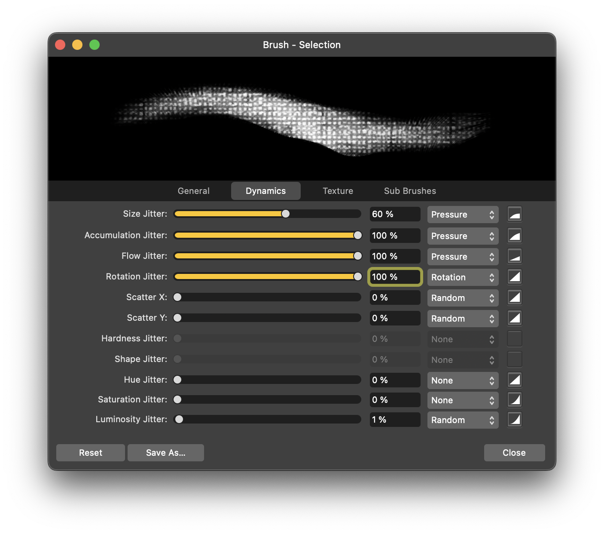
Clip Studio Paint
Clip Studio Paint reads Art Pen rotation. In Brush tip, open the Angle dynamics and choose Pen tilt. The brush then follows the physical rotation of the pen barrel.
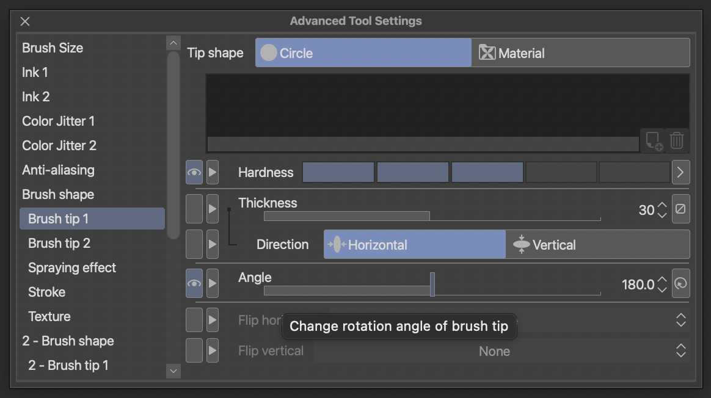
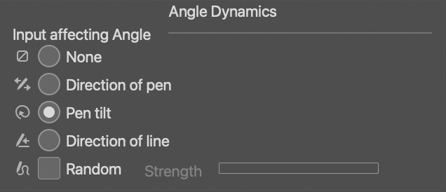
Adobe Illustrator
In Illustrator's brush options dialog, set the per-brush Angle variation to Stylus Wheel for rotation-driven nib angle. The control name is the same in every localization; only the surrounding labels translate.
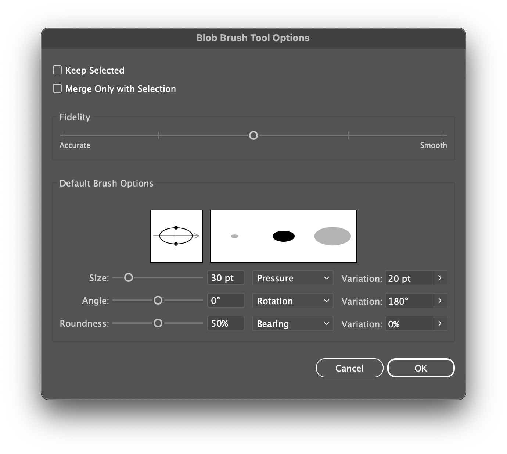
Krita
Krita exposes rotation as a sensor under the brush editor's Rotation parameter. Add the Rotation sensor and pick a curve to map raw barrel rotation onto brush tip orientation.
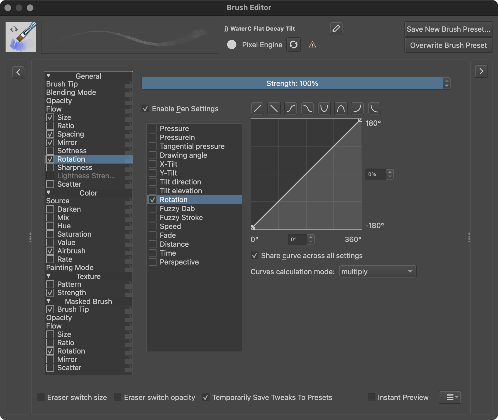
Adobe Photoshop
Photoshop reads Art Pen rotation directly as of MockTab 0.5.0. In Brush Settings, open Shape Dynamics and set the Angle Jitter control to Rotation.
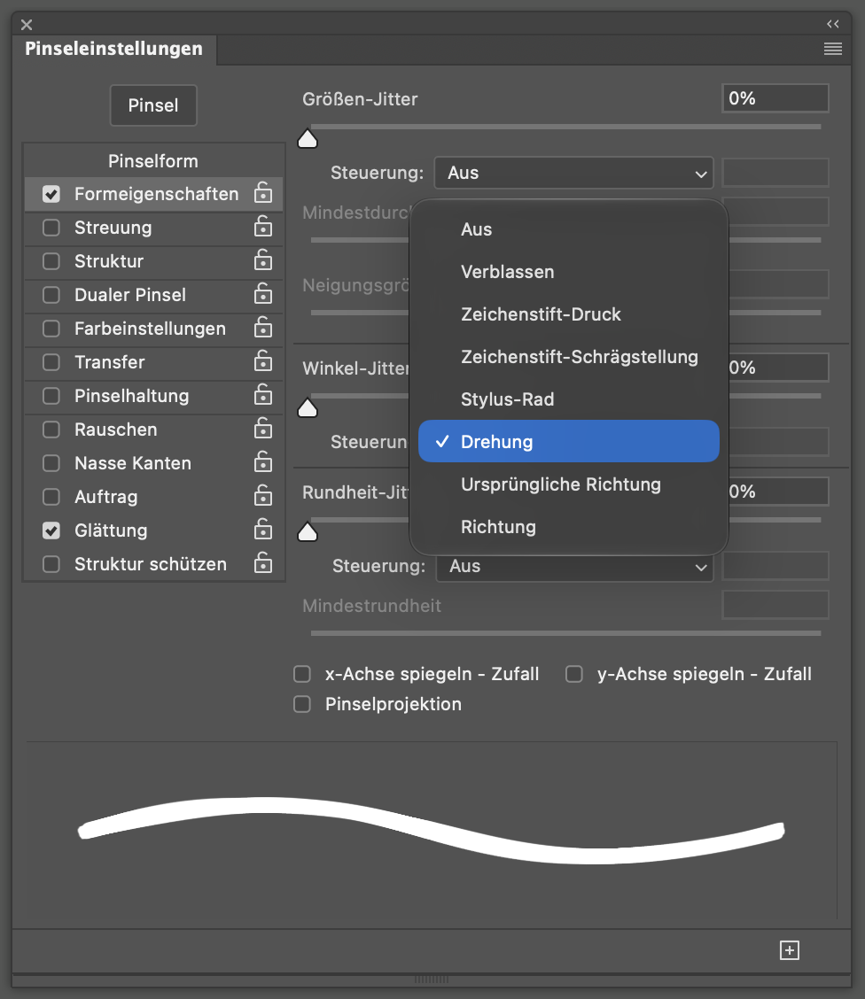
Escape Motions Rebelle
Rebelle reads rotation automatically when you select a rotation-aware brush.
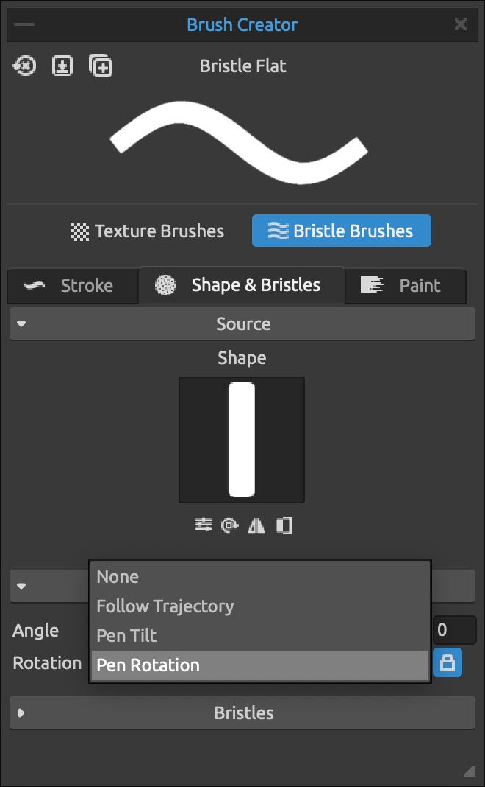
Rebelle > Tablet > Tablet Options also offers a built-in rotation invert.
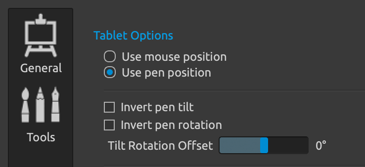
Panning
MockTab provides Pan View as a built-in button action — it grabs and drags the canvas like a hand tool. Assign it to a pen or aux button in the Buttons pane. Pan View support varies by app. Where it doesn't work, consider Smart Scroll or Smooze Pro instead.